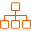

ITN-DCH FINAL CONFERENCE
Hotel Sotelia, Olimje, Slovenia
23rd-25nd May 2017
ITN-DCH FINAL CONFERENCE is an international event for the professionals of multiple disciplines and scholars working in the Digital Cultural Heritage domain. The aim of the conference is to bring together experts, stakeholders and researchers from the cultural domain and, addressing the current challenges, start a dialogue that will lay the foundation for the creation of a multidisciplinary community of practice..
The“Initial Training Network for Digital Cultural Heritage: Projecting our Past to the Future” with acronym ITN-DCH, is the first and one of the largest Marie Curie fellowship projects in the area of the e-documentation / e-preservation and CH protection funded by the European Union under the FP7 PEOPLE research framework. The Project started on the 1st of October 2013 and its consortium comprising of 14 full partners and 10 associate members covering the entire spectrum of European CH actors, ranging from academia, research institutions, industry, museums, archives and libraries. The project aims to train 20 fellows (16 ESR’s and 4 ER’s – 500 person months) in the area of CH digital documentation, preservation and protection in order to create them a strong academic profile and market oriented skills which will significantly contribute to their career prospects.
Digital Cultural Heritage is a complex domain that requires new requires new skills, advanced techniques and constantly upgrading know-how; for the fulfillment of which a multilevel training and an interdisciplinary collaboration among experts is necessary in order for common methodologies and best practises for the profound understanding of our past to be established. It is important to create a forum of discussion where diverse leading academic scientists, researchers, practitioners and educators are brought together to exchange and share their experience, as well as confront each others on the challenges and advancements in each of their domain. The scope of the conference is, therefore, to:
- Encourage interdisciplinary and innovative analysis in the cultural domain
- Promote synergies and knowledge exchange between the participants
- Develop multidisciplinary connections for future development
- Disseminate the results of innovative research
- Publish the results of applied work as well as innovative concepts that would help shape our current understanding of cultural heritage
To this cause, we are seeking for original and innovative contributions in theoretical and practical applications on Digital Cultural Heritage, in the following themes., we are seeking original and innovation contributions in theoretical and practical applications of digital cultural heritage.
THEMES
Data Acquisition for Tangible and Intangible - Processing and Modelling

- Image matching and 3D reconstruction
- 3D scanning & digitization (laser, structured light, motion capture, etc.)
- Low-cost 3D reconstruction
- Heritage Building Information Modeling (HBIM)
- 4D modelling
- Multi-source data/multi-sensors approaches
Metadata - Semantics - Ontologies

- Linked data and application
- Authenticity & provenance
- Metadata aggregation
- Quality metrics
- Ontology engineering
- Principles, guidelines, and best practices
- Application profile
- Interoperability and mapping across domains
Archiving / Use and Reuse
- Digital curation workflows & application
- Audio/video digital libraries
- Annotations & Annotation management
- Data visualisation
- Interactive visualisation
- Storytelling and serious game
- Mixed/augmented reality


{kind=link}
{kind=link}
{kind=link}
{kind=link}
{kind=link}
{kind=link}
{kind=link}